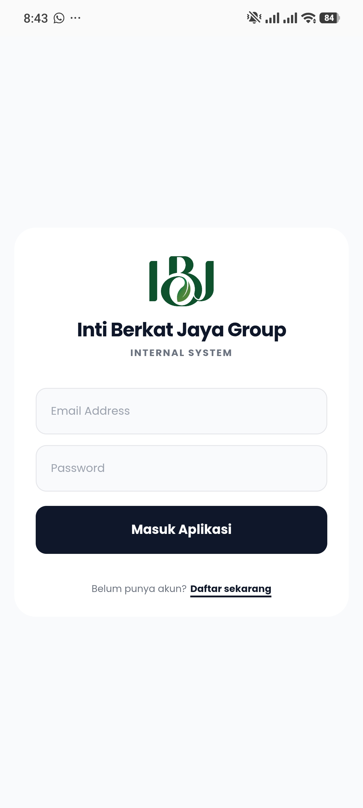
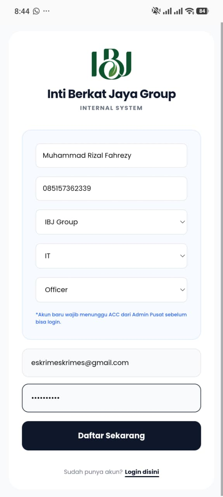
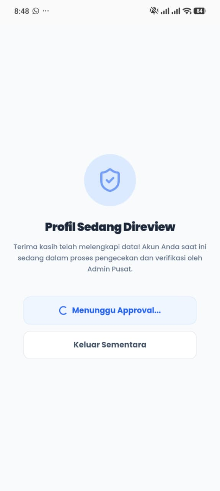
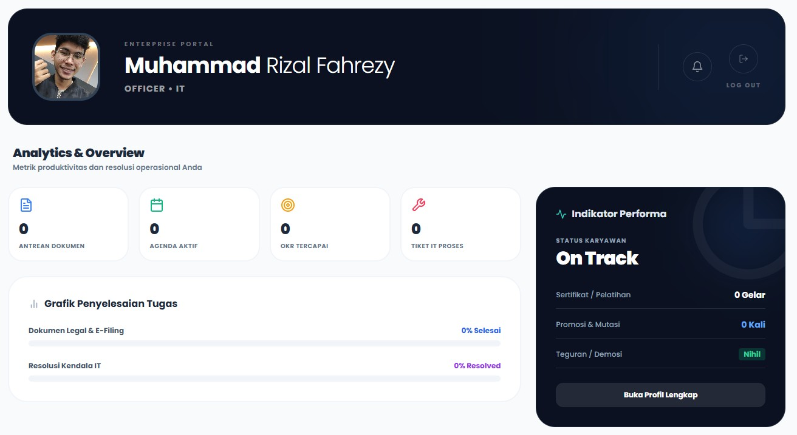
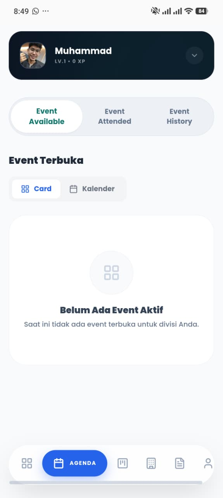
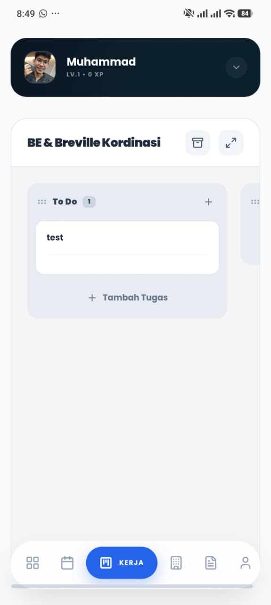

Alur Pendaftaran & Panduan Ascend HR
Ikuti langkah-langkah di bawah ini secara berurutan.
1 Halaman Awal & Mulai Mendaftar

- Akses Portal: Silakan buka peramban (browser) pada perangkat Anda, kemudian kunjungi tautan hc.intiberkatjaya.com untuk karyawan IBJ Group, atau hc.bettersound.id untuk karyawan PAI Group.
- Setelah tautan terbuka, Anda akan dihadapkan pada halaman utama Login.
- Bagi Anda yang sudah memiliki akun dan telah diverifikasi (di-ACC), silakan langsung memasukkan Email dan Password.
- Namun, bagi karyawan baru yang belum memiliki akun, abaikan kolom login dan langsung klik teks "Daftar sekarang" di bagian paling bawah layar.
2 Pengisian Form Registrasi

- Setelah klik daftar, Anda akan diarahkan ke form registrasi akun. Isi semua kolom dengan benar.
- Data Dasar: Masukkan Nama Lengkap dan Nomor WhatsApp aktif.
- Penempatan: Pilih Grup Perusahaan (misal: IBJ Group), Departemen divisi kerja (misal: IT), dan Posisi/Level Anda (misal: Officer).
- Akses Login: Masukkan Email pribadi/perusahaan dan buat Password yang aman.
- Setelah semua terisi, klik tombol hitam Daftar Sekarang.
3 Lengkapi Data Karyawan (Dossier)


Sesaat setelah berhasil mendaftar, Anda wajib melengkapi biodata. Data tersimpan otomatis di setiap kolom (Draft Aman).
- Identitas & Foto: Unggah pas foto wajah yang jelas dengan ukuran maksimal 5 MB.
- Info Pribadi: Masukkan Email, ketik Nama Lengkap (harus sesuai dengan Talenta), pilih Jenis Kelamin, dan pastikan Nomor WA Aktif benar. Lengkapi juga Tempat serta Tanggal Lahir Anda. Lalu klik tombol Lanjut ke Pendidikan.
- Pendidikan: Masukkan Nama Institusi/Universitas/Sekolah tempat Anda belajar. Pilih tingkat Pendidikan Terakhir, dan masukkan Nilai Terakhir (bersifat Opsional).
- Status Sosial: Pilih Agama, Golongan Darah, dan Status Pernikahan Anda saat ini.
- Setelah selesai di halaman pendidikan, klik tombol Lanjut ke Alamat & Kontak untuk menyelesaikan form.
4 Profil Sedang Direview (Verifikasi)

- Setelah seluruh rentetan data (Info Pribadi, Pendidikan, hingga Alamat) selesai diisi, layar akan otomatis menampilkan status Profil Sedang Direview.
- Ini berarti akun baru Anda belum bisa langsung digunakan. Data sedang dalam proses pengecekan dan verifikasi silang oleh Admin Pusat / HRD.
- Anda bisa menekan Keluar Sementara dan menutup aplikasi sambil menunggu status di-ACC.
5 Panduan Fitur di Dalam Aplikasi
Jika akun sudah diverifikasi, Anda dapat login dan mengakses menu-menu portal enterprise berikut:

1. Dashboard & Analytics (Eksplor)
Ini adalah tampilan Enterprise Portal utama Anda. Di halaman ini, Anda dapat memantau secara real-time:
- Analytics & Overview: Melihat metrik produktivitas harian, seperti Antrean Dokumen, Agenda Aktif, pencapaian OKR, hingga Tiket IT yang sedang diproses.
- Grafik Penyelesaian Tugas: Memantau persentase penyelesaian urusan E-Filing maupun resolusi kendala IT Anda.
- Indikator Performa: Rangkuman status Anda sebagai karyawan (misal: On Track), riwayat sertifikat, riwayat promosi, hingga status teguran.

2. Agenda (Ikon Kalender)
Merupakan pusat informasi kegiatan perusahaan. Terdiri dari 3 tab:
- Event Available: Acara atau pelatihan yang terbuka.
- Event Attended: Acara yang sedang Anda ikuti.
- Event History: Riwayat acara yang sudah berlalu.

3. Kerja (Ikon Papan Kanban)
Fitur koordinasi kerja. Anda dapat menambahkan rincian tugas mandiri di kolom To Do dan berkoordinasi dengan tim/divisi lain.

4. File (Ikon Dokumen)
Ini adalah ruang brankas digital Anda (E-Filing & Dokumen Legal). Tempat untuk melihat atau mengunduh ulang dokumen resmi yang dikirimkan oleh HRD, seperti kontrak kerja.


5. Profil (Ikon Orang)
Pusat kendali akun Anda. Di dalam menu profil ini, Anda dapat:
- Koleksi Piagam: Mengunduh (download) sertifikat dari pelatihan yang berhasil Anda selesaikan.
- Dossier Karyawan: Melihat dan mengedit kembali Data Diri.
- OKR & Target Kinerja: Memantau pencapaian objektif Anda bulan ini.
- Aset IT: Melihat daftar inventaris laptop/perangkat yang Anda pinjam, serta fitur Helpdesk IT untuk laporan masalah teknis.